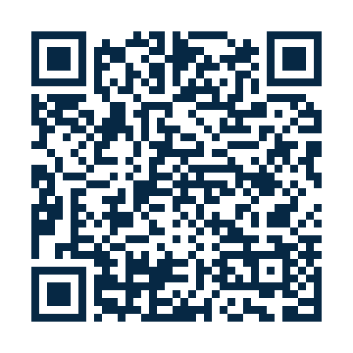

Educação Básica
Materiais de reforço, conteúdos relacionados à BNCC, videoaulas e simulados digitais para estudantes.
Conhecer as séries →O Instituto EnsinoMeu reúne recursos de aprendizagem escolar e formação profissional livre. Buscamos patrocinadores, apoiadores e parcerias para ampliar o acesso, produzir conteúdos e fortalecer a acessibilidade digital.
Quem desejar pode contribuir com qualquer quantia para apoiar a manutenção e o desenvolvimento do projeto educacional Instituto EnsinoMeu. O acesso aos conteúdos gratuitos não depende de doação.

Leia o QR Code com a câmera do celularO link foi gerado sem valor definido (R$ 0,00 na mensagem de compartilhamento). Na página do Nubank, escolha quanto deseja contribuir e confira os dados do recebedor antes de confirmar.
Importante: este QR Code abre a página de cobrança do Nubank; não é um QR Code Pix interoperável para leitura direta dentro do aplicativo de outro banco. Abra a página para consultar as opções de pagamento oferecidas pelo Nubank. O botão copia o link, não um código Pix Copia e Cola.
Finalidade pretendida: apoio à produção de conteúdos educacionais, manutenção técnica, recursos de acessibilidade e ampliação das oportunidades gratuitas. O recebimento é feito na conta pessoal indicada pelo responsável pelo projeto.
Materiais de reforço, conteúdos relacionados à BNCC, videoaulas e simulados digitais para estudantes.
Conhecer as séries →Trilhas de formação livre, orientação de interesses profissionais, currículo e treinamento para entrevistas.
Conhecer o orientador →Compromisso de reduzir barreiras econômicas e ampliar a leitura, o uso por celular e a navegação assistiva.
Enviar proposta de inclusão →Os links a seguir mostram recursos publicados. O projeto está em evolução; funcionalidades futuras não são apresentadas como concluídas.
Página inicial, acesso a materiais gratuitos, áreas de ensino e biblioteca.
Visitar a plataformaMaterial de apoio, cursos livres e simuladores em diferentes áreas. A disponibilidade varia entre os módulos.
Explorar acervoAgente de interesses profissionais, currículo preparado no navegador e treino guiado de entrevistas.
Ver oficina práticaApoio à produção, revisão e atualização de apostilas, simulados, recursos audiovisuais e ferramentas gratuitas.
Infraestrutura, hospedagem, soluções de acessibilidade, equipamentos, consultoria, produção audiovisual e licenças.
Cooperação com empresas, escolas, organizações e profissionais para ampliar orientação e revisão de conteúdos.
Etapas que podem orientar acordos, cronograma e acompanhamento de resultados.
Revisão pedagógica, melhoria da usabilidade, contraste, navegação por teclado e experiência para celular.
Ampliação de cursos livres, materiais didáticos, videoaulas, agentes guiados e treino para oportunidades de trabalho.
Definição conjunta de indicadores, como acesso a conteúdos, conclusão de atividades e satisfação voluntária dos usuários, respeitando privacidade e consentimento.
O orçamento, o prazo, as entregas, as contrapartidas e os indicadores precisam ser negociados e documentados antes da execução. Resultados e números só devem ser apresentados quando puderem ser comprovados.
Os conteúdos educacionais divulgados como gratuitos continuarão sem checkout obrigatório. Dados de estudantes, especialmente menores, não devem ser compartilhados com patrocinadores para fins de publicidade.
Envie sua proposta e receba informações para elaborar um plano de apoio compatível com os objetivos do Instituto.
E-mail para propostas e parcerias: professorsrcarlos@gmail.com
O botão abre o aplicativo de e-mail do visitante. O site não registra nem envia automaticamente propostas.